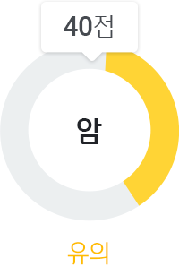
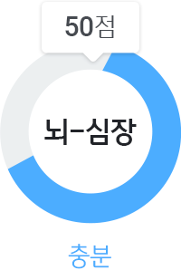
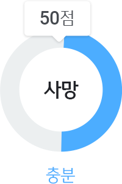
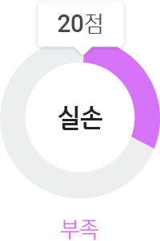

김국민님 주요보장내역 분석
주요 13대 보장 중
실손/후유장애의 보장이 부족합니다.
실손/후유장애의 보장이 부족합니다.
(신정원 내보험다보여 기준)




- 운전자
- 수술
- 후유장애
- 상해
- 입원비
- 배상/비용
- 간병
- 치아
- 주택화재
주요보장 한번에 채우기
매월 납입하는 보험료 대비 부족한 보장을 채워 주는 서비스입니다.
한번에 채우기로 손쉽고 간편하게 채우기로 신속하고 편리한 서비스를 받으실 수 있고 스스로 채우기로 고객님의 상황과 계획에 맞는 채우기를 하실 수 있습니다.
매월 납입하는 보험료 대비 부족한 보장을 채워 주는 서비스입니다.
한번에 채우기로 손쉽고 간편하게 채우기로 신속하고 편리한 서비스를 받으실 수 있고 스스로 채우기로 고객님의 상황과 계획에 맞는 채우기를 하실 수 있습니다.
한번에 채우기로 손쉽고 간편하게 채우기로 신속하고 편리한 서비스를 받으실 수 있고 스스로 채우기로 고객님의 상황과 계획에 맞는 채우기를 하실 수 있습니다.
주요보장 스스로 채우기
매월 납입하는 보험료 대비 부족한 보장을 채워 주는 서비스입니다.
한번에 채우기로 손쉽고 간편하게 채우기로 신속하고 편리한 서비스를 받으실 수 있고 스스로 채우기로 고객님의 상황과 계획에 맞는 채우기를 하실 수 있습니다.
매월 납입하는 보험료 대비 부족한 보장을 채워 주는 서비스입니다.
한번에 채우기로 손쉽고 간편하게 채우기로 신속하고 편리한 서비스를 받으실 수 있고 스스로 채우기로 고객님의 상황과 계획에 맞는 채우기를 하실 수 있습니다.
한번에 채우기로 손쉽고 간편하게 채우기로 신속하고 편리한 서비스를 받으실 수 있고 스스로 채우기로 고객님의 상황과 계획에 맞는 채우기를 하실 수 있습니다.